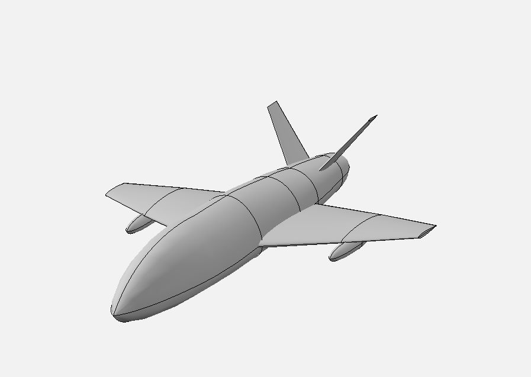

Carrier-Based CCA Concept Design
My senior design team Gobbleworks is designing a fully autonomous, carrier-integrated Collaborative Combat Aircraft (CCA) for the strike mission in collaboration with NAVAIR, with a $30M unit-cost threshold at 500 aircraft and a 500 nm combat radius (700 nm objective). I lead aerodynamic design and analysis, covering planform, drag, and inlet shaping, and contribute to avionics systems integration. The team developed four distinct concepts against one shared design mission. My concept, X-2, is a single-engine, conventional swept-wing design with a compact V-tail, folding wings, hybrid weapon carriage, and a center-bottom inlet, sized to stay within carrier span and spot-factor limits. Team scope spans concept sizing, autonomy architecture, mission planning, and cost analysis.

Concept X-2 / single engine, swept wing, V-tail